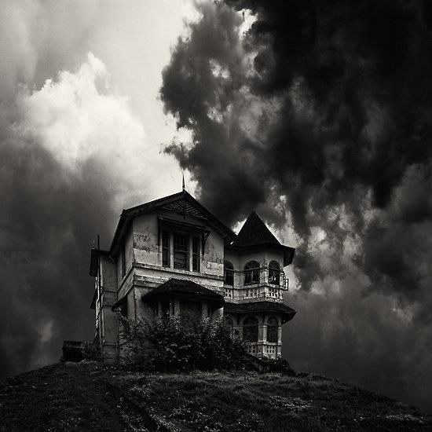

Hill House itself, not sane, stood against its hills, holding darkness within; it had stood so for eighty years and might stand for eighty more. Within, its walls continued upright, bricks met neatly, floors were firm, and doors were sensibly shut; silence lay steadily against the wood and stone of Hill House, and whatever walked there, walked alone.
